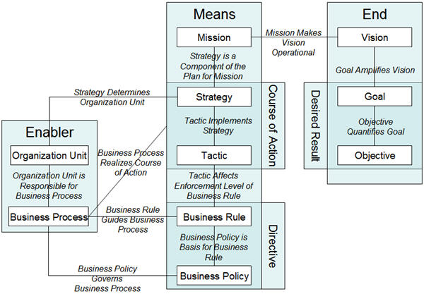

| Work Product (Artifact): Business Direction (BUS 411) |
 |
|
A clearly described and communicated Business Direction provides management with:
It provides the engagement or project team with:
Note for pre-sale solution design (Team Solution Design users): Our purpose is limited to an understanding of the client's business direction that is applicable to the projects we are involved in. We need to create a common understanding with the Client's management team of the client's vision, mission, and future business goals.
|
| Roles | Responsible: | Modified By: | |
|---|---|---|---|
| Input To | Mandatory: | Optional:
| External:
|
| Main Description | A 'high-level’ understanding is gained of what the enterprise is and aspires to become, how it intends to achieve its goals and make the desired transition and by what means. What is included in the business direction depends upon the nature of the engagement. At a minimum, the company's vision, mission, goals and strategic direction should be understood and documented. It is often enough to provide guidance for analysis and alignment of any functional area of a company, including IT, and to provide prioritization criteria for initiatives, programs, projects and even modules of a technology package. This is because good vision, mission, goal statements and strategic direction usually identify a future view, a description of types of offerings and customers, and means to achieve the desired outcome. In practice, value propositions, required capabilities and key resources to enable a capability, are replacing the use of traditional strategic concepts like Critical Success Factors and Distinctive Competencies. The following terms are used in this artifact: vision statement, mission statement, business goals, critical success factors (CSF's), value proposition, capability, and key performance indicator (KPI). The technique paper associated with this work product therefore also includes a brief discussion of Value Propositions and Capabilities and how these can be used to show business direction.Note for pre-sale solution design (Team Solution Design users): This work product documents the Client's business direction with a focus on information that will have the greatest impact on our IT projects. Learning this information from the client should be a discovery process, gaining more about the client's business as we work on additional projects. Solution design should start with Business Direction and flow all the way through the design. That is, Business Direction elements like Objectives and Tactics are the justification for Initiatives, Programs and Projects documented in Project Definition. Functional and Non-Functional Requirements are then defined for the Project and Architectural Decisions are made defining solution design elements (reflected in Architecture Overview, Component Model, Operational Model, etc.) and with any risks or issues identified in the Viability Assessment. Although different clients define the following terms differently, the Object Management Group, Inc. (OMG: www.omg.org) has defined a Business Motivation Model (BMM) that provides a schema or structure for developing, communicating, and managing business plans in an organized manner. TeamSD follows the guidance of the OMG in defining this subset of terms for our use with clients. Of course, if the client has defined terminology, we should use that. Generally, the following information should be available from the client: 
Including a Business Context Diagram in the description of Business Direction may be useful to describe the identity of
the business area being served in a project. This diagram can show interactions with other businesses or with
other functional areas within the business. This understanding is key to developing a system that is properly
situated in the client's business.
Various Business Context Diagrams can be examined and discussed with the client as a way of clarifying which business interactions are in scope, and which are out of scope, of the area of interest. Remember, for pre-sale solution design (Team Solution Design users), creating this artifact is more of a "discovery process" than a creation process. The graphic illustrated above is available in this attachment: business_motivation_model_overview.ppt |
|---|---|
| Brief Outline | The Business Direction can include the following content:
|
| Templates | |
|---|---|
| Examples |
Challenge the management team's statements on measurability and feasibility. Very often, Business goals, and CSF's are not well defined. If this is the case try to convince the management team to work on this as their preparation to the Business Focus Workshop. MetaPlan can really help doing this effectively and efficiently. Find out how a business direction process is used in the organization. Find out what management layers have influence on a mission, goals, strategy, CSF’s and key performance indicators (KPI) process. Is it a yearly process or dynamic, used or put away in a bottom drawer? How is the terminology used? Find out if the Management team – especially the members of the HR and marketing organizations – are familiar with accessibility standards for their on-line information and services. While your customer may not be under a government regulation requiring that it makes its information and services accessible, customers with e-business models may recognize substantial brand value from ensuring that their information, services and business processes are accessible. Additionally, where e-Government and e-business are gaining momentum, the accessibility of information and services is shifting from solely a regulatory mandate to an explicit element of the organization’s vision and mission. Note: With the increasing degrees of uncertainty brought on by e-business, practitioners might wish to familiarize themselves with Stephan Haeckel's book Adaptive Enterprise. Traditional concepts regarding strategic direction will be profoundly tested and practitioners should be aware of the changes and be able to articulate a required strategy in the new information economy brought on by e-business. The following are excerpts from the introduction and first chapter of this book. In the information economy brought on by e-business, traditional content within vision, mission, goals etc. is changing rapidly and successful companies are articulating strategic directions from a "sense & respond" perspective, rather than a "make and sell" perspective, meaning that strategic directions should be based on a highly anticipative modular organization with mechanisms that rapidly identify what a customer believes are of value instead of trying to predict what customers want, making it and then pushing it to them. The latter is that structure follows strategy rather than strategy as structure. Over time, companies will create a "context" that unambiguously establishes what the firm does and the constraints for how it does it. Leaders will specify how employees interrelate to achieve an organization's purpose. The elements of the "context" thus established can be seen as analogous to the traditional concepts of mission, policy and organization, but with some important differences. As long as the employees stay within the parameters defined by the context, the business empowers them to determine for themselves how best to deliver results for which they have been made accountable. The result is that context and coordination replace traditional command and control. As individuals in the organization adapt to differing customer requests, always staying within the current organizational context, leadership actively seeks out environmental and internal signals that will help it improve the organizational context itself. What happens is that the sense and respond alternative implies a different way in expressing strategy. Once a company organizes itself to recognize current customer needs and responds to them, it no longer operates from a strategic plan. Now the DESIGN of its systematic capability to respond to unanticipated customer requests expresses its strategy (strategy as a structure as opposed to traditional strategic direction where structure follows strategy a process which now takes too long to effectively respond in the information economy of e-business). Be aware of the language and notation that the client’s organization is using. While this work product uses commonly accepted definitions, the terms vision, mission, goals etc. are often used slightly differently. The company’s culture, structure, maturity or economic positions all define the client’s business direction. The strategic direction should ultimately be "grounded": we consider it to be grounded when it is cascaded throughout the organization, processes and functions and is proactively managed. Note for pre-sale solution design (Team Solution Design users): For a discussion on the necessity of this work product and appropriate levels of elaboration for a pre-sale environment, consult the guidance entitled Pre-sale Work Product Usage for Team Solution Design. Enterprise Architecture Influence: Existing enterprise architecture is an important influence on solution design. See the associated Guideline: The Role of Enterprise Architecture in Solution Design for guidance on EA artifacts (or their equivalents) that should be considered when developing this work product. |
| Impact of not having | It will be difficult (and probably impossible) to ensure a viable business strategy or business-driven design, and to
ensure the related implementation of capabilities involving people, process and technology, without a clear definition of
business direction.
|
||
|---|---|---|---|
| Reasons for not needing | This work product may not be needed if:
However, even in this case, a clear business direction for the disconnected part of the business is important. It is strongly recommended that all engagements and projects should be embedded in the overall business direction. Integral management of all parts of the business is essential today. |
| Checklists | |
|---|---|
| Guidelines | |
| Supporting Materials | |
| Tool Mentors | |
| Estimation Considerations |
| Content Lead | tvoss@sg.ibm.com |
|---|---|
| Change Date | Thu Mar 17 20:45:44 IST 2011 |
| Revisions | 1.0, June 2002, Baseline Version|4.1.1, August 2002, Edited to comply with intellectual property guidelines and R4 versioning scheme.|4.1.2, June 2004, Updated to incorporate accessibility contentNovember 2008 - baseline version|October 2009 - added OMG references|July 2010 - updated to reflect System Architect considerations|May, 2011 - added guidance on EA influence|July 2012 - added reference to IBM industry imperatives |
© Copyright IBM Corp. 1987, 2016 All Rights Reserved |